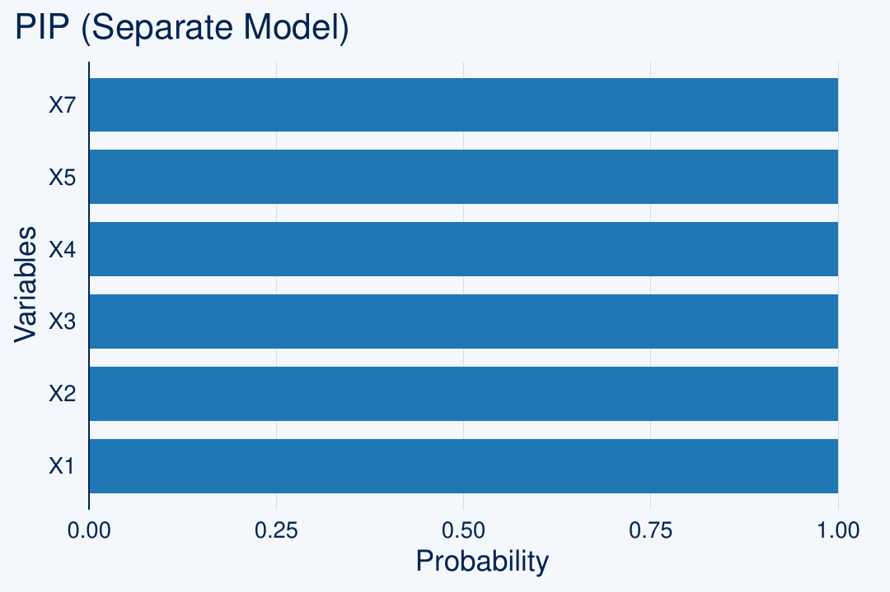
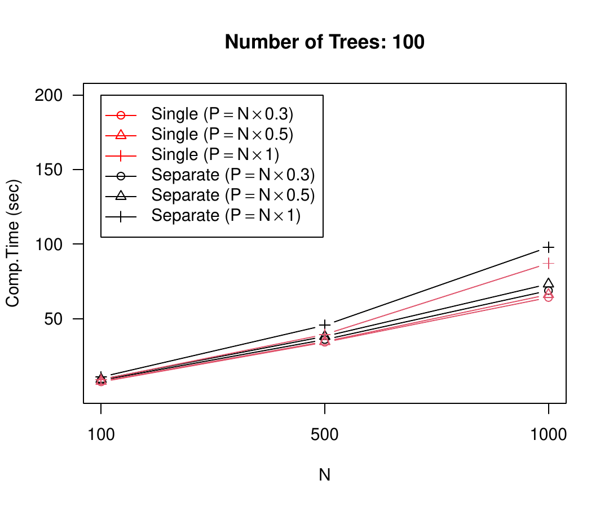
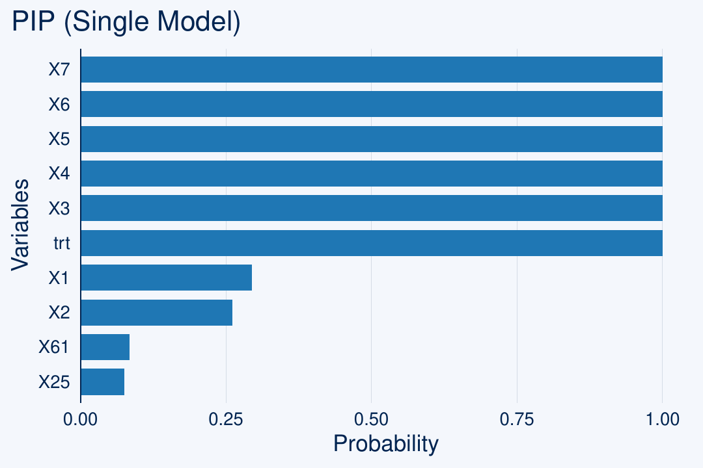

1 Introduction
In observational studies, drawing causality often relies on the ignorability assumption (Rosenbaum and Rubin 1983) that all confounders are included in the adjustment procedure. Alternative approaches, such as difference-in-differences (Abadie 2005), still seek to address confounding without relying on ignorability by adopting a different set of assumptions (e.g., the parallel trends assumption). A confounder or confounding variable is a common cause that simultaneously affects both exposure and outcome (Figure 1 (a)). Two groups with different exposure levels, distinguished by the distribution of the confounding variable, also experience its impact on their respective outcome values. Therefore, to estimate the causal relationship between exposure and outcome, it is crucial to select this common cause in the data and adjust for it. In many recent applications, the number of potential confounders is often enormous, making it difficult to select the optimal set of true confounders among them. In this context, the optimal set is a confounder set with an appropriate level of uncertainty that reduces bias in estimating the final causal effect.
The main distinction between confounder selection and the traditional variable selection method is that variables that meet the ignorability assumption should be chosen. Several criteria need to be met by the selected confounders in order to reduce the bias of estimated causal effects. Among them, “disjunctive cause criterion”(VanderWeele 2019) requires that the chosen variables be related to exposure and/or outcome. In Figure 1 (a), a confounder set \(\boldsymbol{X}\) that satisfies the disjunctive cause criterion consists of variables that either affect exposure \(A\), affect outcome \(Y\), or simultaneously affect both \(A\) and \(Y\). A better condition than this is “disjunctive cause criterion without instruments”(VanderWeele 2019), which removes the variables related to exposure but not directly associated with outcome. An instrument, or instrumental variable, is a variable that influences exposure \(A\) but does not affect outcome \(Y\). It is known to amplify bias in causal effect estimation when there is an unmeasured confounder (Myers et al. 2011). In Figure 1 (b), if a certain confounder from \(\boldsymbol{X}\) is unmeasured and not adjusted for (i.e., in the presence of an unmeasured confounder), conducting adjustment for instrument \(Z\) leads to additional bias, known as “\(Z\)-bias" (Ding et al. 2017). Therefore, the best practice is to remove this instrument during the covariate adjustment process. However, manually identifying a set of confounders that meet these criteria among a large number of potential confounders is challenging.
Methods based on data and statistical models for performing such confounder selection have recently been proposed. One such method is the Bayesian adjustment for confounding (BAC) method proposed by (Wang et al. 2012; Lefebvre et al. 2014), which connects exposure and outcome models through common variable inclusion indicator variables to identify confounders. (Wang et al. 2015) later modified the BAC method to work with generalized linear outcome models. (Wilson and Reich 2014) suggested a method based on decision theory with a similar goal, which performs well for a variety of sample sizes. In terms of selecting relevant covariates for use in propensity score, (Shortreed and Ertefaie 2017) proposed the outcome-adaptive LASSO method. In addition, (Häggström 2018) proposed a method for identifying the causal structure and estimating the causal effect using a probability graphical model.
Despite the advantages of the previously mentioned methods, they each have limitations. To address these shortcomings, (Kim et al. 2023) proposed a novel Bayesian non-parametric model that aims to overcome these limitations. They suggested a new method that employs Bayesian additive regression trees (BART; (Chipman et al. 2010)) with a shared prior for the selection probabilities, which links the exposure and outcome models. This approach allows for the flexibility and precision of a Bayesian nonparametric model, while also identifying and integrating covariates that are related to both the exposure and outcome into the final estimator. (Caron et al. 2022) similarly applied a sparsity-inducing Dirichlet prior to the selection probabilities in the outcome model of Bayesian Causal Forest, a variant of BART proposed by (Hahn et al. 2020). However, while their approach focuses on inducing sparsity among variables used within the trees, our method introduces a common prior shared by both the outcome and exposure models to facilitate confounder identification. This paper introduces bartcs, a new R package developed by (Yoo 2024) that implements the Bayesian additive regression trees method for confounder selection proposed by (Kim et al. 2023). The package, which is written in C++ and integrated into R via Rcpp for fast computation and easy use, can be downloaded from the Comprehensive R Archive Network (CRAN) at https://cran.r-project.org/package=bartcs. Certain sections of the code referred to the BART package by (Sparapani et al. 2021) under the GPL license, with modifications. In particular, the development of efficient code involved referencing the existing BART package algorithm in following aspects: 1) code related to obtaining residuals in the Bayesian backfitting process; 2) code dedicated to efficiently searching for variables eligible for splitting when proposing a splitting variable during the tree alteration process; 3) code for calculating the \(\mu\) parameter value of leaf nodes; 4) code for obtaining sufficient statistics for all bottom nodes.
In this paper, we provide an overview of the package, including installation instructions, usage examples, and a demonstration of its performance on simulated data. We also include a comparison with other existing confounder selection methods. Our aim is to provide researchers with a useful tool for identifying relevant confounders in their causal inference studies and to enable them to make more accurate causal inferences.
| Package | Lang. | Description |
|---|---|---|
| bacr (Wang et al. 2015) | R | Assume (generalized-) linear models (i.e., parametric models) for exposure and outcome. Supports binomial, Poisson, Gaussian exposure and outcome. |
| BayesPen (Wilson et al. 2015) | R | Assume linear models (i.e., parametric models) for exposure and outcome. Support continuous outcome. |
| CovSelHigh (covselhigh?) | R | Confounder selection performed via either Markov/Bayesian networks (model-free selection of confounders). |
| BART (Sparapani et al. 2021) | C++ | Incorporate the Dirichlet sparse prior of (Linero 2018) for variable selection in the BART outcome model. Support various outcome types (categorical, continuous, binary, survival outcome). This does not primarily focus on confounder selection, but rather variable selection, and this variable selection functionality is enabled by setting sparse=TRUE in wbart (continuous outcome) pbart/lbart (binary outcome) mbart/mbart2 (categorical outcome) surv.bart (survival outcome) functions. |
| bcf \(^\dagger\) (Hahn et al. 2020) | C++ | Specify different BART models for confounding adjustment and heterogeneous effect estimation, and regularizing the treatment effect directly. This model lacks the ability for both variable selection and confounder selection. Support continuous outcome. |
| bartCause\(^\dagger\) (Hill 2011) | C++ | Fit exposure and outcome models using the BART algorithm, producing estimates of treatment effects. This model lacks the ability for both variable selection and confounder selection. Support continuous and binary outcome. |
| bartcs (Yoo 2024) | C++ | Use BART outcome and exposure models with the common Dirichlet prior for confounder selection. Support binary and continuous exposure, and continuous outcome. |
2 Overview of model
We first express causal estimation within a potential outcome framework (Rubin 1974). For each unit \(i=1, \cdots, N\), the potential outcome for the \(i\)-th unit is defined as \(Y_i(a)\), representing the potential value of the outcome \(Y_i\) that could be observed under the binary exposure \(A_i=a \in \{0,1\}\). Under the Stable Unit Treatment Value Assumption (SUTVA) (Rubin 1980), the potential outcomes correspond to the observed outcome as follows: \(Y_i = Y_i(A_i)\) for \(A_i \in \{0, 1\}\). The target causal estimand is \[\Delta(1,0) = E[Y_i(1) - Y_i(0)],\] which represents the average difference between two potential outcomes under two exposure levels \(0\) and \(1\). In the later section, we will also explain the utilization of the proposed model by extending it for cases involving continuous exposure.
However, unlike randomized trials, the exposure assignment is not randomized in observational studies, making it impossible to directly identify either \(E[Y_i(1)]\) or \(E[Y_i(0)]\) from observed data. With no unmeasured confounders \(\boldsymbol{X}_i\), the following strong ignorable treatment assignment assumption (Rosenbaum and Rubin 1983) holds \[\{Y_i(1), Y_i(0)\} \perp A_i | \boldsymbol{X}_i,\] and \(0 < Pr(A_i=1 | \boldsymbol{X}_i=\boldsymbol{x}) < 1\) for all \(\boldsymbol{x}\); \(i=1, \cdots, N\). The first part is also known as the unconfoundedness assumption, and the second part is referred to as the positivity or overlap assumption, which states that each unit has a non-zero probability of being assigned to each treatment condition. This strong ignorable treatment assignment assumption is sufficient to identify the target causal estimand \(\Delta(1,0)\) (Rosenbaum and Rubin 1983; Ding and Li 2018; Li et al. 2023). In practice, even if the true treatment assignment mechanism satisfies the above conditions, finite observed data may have only one treatment condition value for certain combinations of \(\boldsymbol{X}\). In this case, a non-overlap region occurs for that \(\boldsymbol{X}\) combination, and target causal estimates in such cases inevitably rely on extrapolation dependent on the model. When non-overlap is severe, it can amplify bias in the target causal estimate. Therefore, recent research interest lies in whether estimates in such regions are provided with an appropriate level of uncertainty (Oganisian and Roy 2020; Papadogeorgou and Li 2020; Li et al. 2023). Any method based on outcome regression cannot provide accurate estimation in the non-overlapping region. Further discussion on this topic is available in (Li et al. 2023).
Another notable aspect of this assumption is that it is untestable. Therefore, it is not possible to conduct tests based on the data to determine which confounder \(X\) satisfies the above assumption. However, confounders \(\boldsymbol{X}\) that meet the criteria presented in the introduction (disjunctive cause criterion or disjunctive cause criterion without an instrument; (VanderWeele 2019)) can be considered a minimum basis for a “proper” confounder set. With this strong ignorable treatment assignment assumption in place, we can identify the causal effect by the following equation of the observable quantities: \[\Delta(1, 0; \boldsymbol{x}) = E[Y_i|A_i=1, \boldsymbol{X}_i=\boldsymbol{x}]-E[Y_i|A_i=0, \boldsymbol{X}_i=\boldsymbol{x}],\] and finally identify and estimate the target estimand \(\Delta(1, 0)\) by averaging over confounders \(\boldsymbol{X}\). Thus, the two key tasks in estimating causal effects are identifying the confounders among a potentially large set of covariates, and determining the outcome model (i.e., \(E[Y_i|A_i=a, \boldsymbol{X}_i=\boldsymbol{x}]\), \(a \in \{0, 1\}\)) with flexibility and precision. The bartcs R package was developed to address these challenges by utilizing Bayesian additive regression trees (BART) models for confounder selection and causal effect estimation.
Overview of BART
The BART model (Chipman et al. 2010) is an ensemble of decision trees that can be represented by the following equations:
\[\begin{aligned} y_i &=& \mu_0+f(\boldsymbol{X}_i) + \epsilon_i \\ f(\boldsymbol{X}_i) &=& \sum_{t=1}^T g(\boldsymbol{X}_i ; \mathcal{T}_t, \mathcal{M}_t), \end{aligned}\] where \(\epsilon_i\) follows a normal distribution with mean 0 and variance \(\sigma^2\), and \(g(\boldsymbol{X}_i; \mathcal{T}_t, \mathcal{M}_t)\) is a function that maps the tree structure and parameters to the response, for all \(i=1, \cdots, N\). We specify a BART prior on \(f\), comprised primarily of two components: a prior concerning the complexity of each tree, \(\mathcal{T}_t\), and a prior concerning its terminal nodes, \(\mathcal{M}_t\). For each of \(T\) distinct trees, \(\mathcal{T}_t\) represents the structure of the \(t\)-th tree and \(\mathcal{M}_t = \{\mu_{t,1}, \mu_{t,2}, \cdots, \mu_{t,n_t}\}\) represents its mean parameters at the terminal nodes. Each tree has internal nodes that are split based on a “splitting variable” \(X_j\) and “splitting value” \(c\) (Figure 2). In many papers that use continuous outcome data, the outcome variable \(y\) is centered. In this case, \(\mu_0\) is set to \(0\). As mentioned in (Sparapani et al. 2016), when the sample size is moderate or larger, centering is not necessarily required due to the flexibility of \(f\). Proceeding with the assumption that the outcome data has also been centered, \(\mu_0 = 0\) for the explanation here.
In the Markov Chain Monte Carlo (MCMC) update, Bayesian backfitting(Hastie and Tibshirani 2000) is utilized within a Metropolis-within-Gibbs sampler. This involves fitting each tree in the ensemble sequentially, using the residual responses: \(\mathbf{R}_{-t} : = \mathbf{y} - \sum_{j \neq t} g(\boldsymbol{X}; \mathcal{T}_j, \mathcal{M}_j)\) where \(\mathbf{R}_{-t}\) denotes unexplained outcome residuals for the \(t\)-th tree. In each iteration of the MCMC update, a new tree structure is proposed by randomly selecting one of three possible tree alterations:
GROW: Choose a terminal node at random, and create two new terminal nodes. This process involves randomly selecting a predictor, \(X_j\), and its associated “splitting value,” \(c\), to create the two new terminal nodes.
PRUNE: Pick an internal node at random where both children are terminal nodes (known as a “singly internal node” (Kapelner and Bleich 2016)) and remove both of its children (thus making it a terminal node).
CHANGE: Select an internal node at random and modify its splitting variable and value according to the priors.
When BART was first introduced by Chipman et al. (2010), four tree alteration
steps (GROW, PRUNE, CHANGE, and SWAP) were considered. However,
following work by Kapelner and Bleich (2016), who proposed the
bartMachine package for BART implementation, demonstrated that
omitting the SWAP step does not significantly affect the performance in
terms of tree updates or parameter mixing. Notably, since GROW and PRUNE
are paired as opposite moves, and CHANGE moves are reversible through
opposite-direction CHANGE moves, the detailed balance condition
continues to hold without the SWAP step. Specifically, when using the
grow and change alterations, a new covariate is randomly selected from a
set of \(P\) available covariates as the splitting variable, according to
the assumed prior. The original BART model used a uniform prior of
\(\{1/P, 1/P, \cdots, 1/P\}\) on the selection probabilities
\(\boldsymbol{s} = (s_1, s_2, \cdots, s_P)\). However, to promote
sparsity, Linero (2018) proposed using a Dirichlet prior
\((s_1, s_2, \cdots, s_P) \sim \mathcal{D}(\alpha/P, \cdots, \alpha/P)\).
This prior specification, as outlined in Table
1, enables the
variable selection functionality of the
BART package. Through this,
it can be utilized as a Bayesian variable selection method to choose
important predictors in regression problems. (Kim et al. 2023) have adapted
this method for causal inference, proposing a way to select confounders.
By specifying a common Dirichlet prior on the selection probabilities of
the outcome and exposure models, it allows for the selection of
important variables (i.e., confounders) in both models. Additionally, it
is worth noting that a tree rotation proposal (Pratola 2016)
has been suggested to enable more radical mixing than the classical
‘change’ alteration step. This aspect is planned to be incorporated into
the future updates of the
bartcs package. In the
following section, we will explain the specific setting of this method
and the steps involved in computing the posterior distributions.
BART confounder selection
The bartcs package in R is designed for selecting confounding variables, particularly when a large number of potential confounding variables are present, and for estimating the average treatment effect (ATE) given the chosen set of confounding variables. To accomplish this, the package uses the Bayesian additive regression trees (BART) model to specify the exposure and outcome models as follows: \[\begin{aligned} P(A_i=1) &=& \Phi\left(\mu_1+f_1(\boldsymbol{X}_i)\right) \label{eq:1} \end{aligned} \tag{1}\]
\[\begin{aligned} f_1(\boldsymbol{X}_i) &=& \sum_{t=1}^T g_1(\boldsymbol{X}_i ; \mathcal{T}_t, \mathcal{M}_t) \nonumber \end{aligned}\]
\[\begin{aligned} {\underline{Separate Outcome Models}}: \quad Y_i | A_i =a &=& \mu_2^a + f_2^a(\boldsymbol{X}_i)+ \epsilon_i^a, \quad \epsilon_i^a \sim N(0, \sigma_a^2) \label{eq:2} \end{aligned} \tag{2}\]
\[\begin{aligned} f_2^a(\boldsymbol{X}_i) &=& \sum_{t=1}^T g_2^a(\boldsymbol{X}_i ; \mathcal{T}_t^a, \mathcal{M}_t^a) \nonumber \end{aligned}\]
\[\begin{aligned} {\underline{Single Outcome Model}}: \qquad \qquad \qquad Y_i & = & \mu_3 + f_3(A_i, \boldsymbol{X}_i)+ \epsilon_i, \quad \epsilon_i \sim N(0, \sigma^2), \label{eq:3} \end{aligned} \tag{3}\]
\[\begin{aligned} f_3(A_i, \boldsymbol{X}_i) & = & \sum_{t=1}^T g_3(A_i, \boldsymbol{X}_i ; \mathcal{T}_t^\prime, \mathcal{M}_t^\prime) \nonumber\\ f_1 \sim \text{BART} ,&& f_2^a \sim \text{BART}, \qquad f_3 \sim \text{BART} \nonumber \end{aligned}\] for \(i=1, \cdots, N\) in Equations (1) and (3), and for \(i \in \mathcal{I}_a\) where \(\mathcal{I}_a\) denotes a set of units under each exposure arm \(a \in \{0, 1\}\) in Equation (2). In Equation (1), \(\Phi(\cdot)\) is the standard normal cumulative distribution function. Note that it is required to replace Equation (1) with \(A_i = \mu_1+f_1(\boldsymbol{X}_i) + \epsilon_i\) where \(\epsilon_i \sim N(0, \tau^2)\) when considering a continuous exposure (in Section 5). As mentioned earlier, here we will proceed with the assumption that the outcome data has been centered, setting \(\mu_1\), \(\mu_2^a\), and \(\mu_3\) to 0 for the purpose of elaborating on the methodology. We incorporate a common sparsity-inducing Dirichlet prior \(\boldsymbol{s}_{12}=(s_1, s_2, \cdots, s_P) \sim \mathcal{D}(\alpha/P, \cdots, \alpha/P)\) in the exposure model (Equation (1)) and the outcome model (Equation (2)) resulting in a conjugate update (Figure 3). Alternatively, a common Dirichlet prior is introduced on \(\boldsymbol{s}_{13} = (s_0, s_1, s_2, \cdots , s_P)\) in the single outcome model (Equation (3)), where \(s_0\) represents the probability of exposure \(A\), and the transformed form of \(\boldsymbol{s}_{13}\) is incorporated as the selection probability in the exposure model. We will delve into this aspect in detail later.
If a particular covariate, \(X_j\), is frequently used as a splitting variable in either the model for \(A\) or the model for \(Y\), the model will assign more weight to the selection probability \(s_j\) through larger numbers of splits on \(X_j\). This means that the selection probabilities will tend to favor covariates that have a relationship with \(A\), \(Y\), or both \(A\) and \(Y\). The final confounders chosen for effect estimation in the model for \(Y\) will be those that were proposed for splitting through this prior and were accepted during the updating step of the model for \(Y\), which will further prioritize variables that have a relationship with \(Y\). This characteristic satisfies the “disjunctive cause criterion without instruments” in confounder selection.
Remark
The proposed method assumes that the available set of high-dimensional covariates in the dataset includes all true confounders. Therefore, it is not necessary (and indeed may be detrimental) to pre-select covariates, as doing so could inadvertently exclude true confounders. By providing all available \(P\) covariates (potential confounders) as input, the proposed method will select confounders in a data-driven manner.
However, if there are unmeasured confounders (i.e., if not all true confounders are included in the set of potential confounders), our method cannot entirely avoid biases (e.g., Z-bias, M-bias, etc.). If you suspect that important confounders are unmeasured (thus missing from the potential confounders set), we recommend excluding, in advance, variables that are suspected of being instrumental variables (which affect only the exposure but not the outcome), as well as potential colliders (variables that are believed to have no direct effects on both exposure and outcome), before applying the proposed method.
Separate outcome models
For a binary exposure, we separate the outcome model into two distinct sub-models, in order to align the dimensions of the covariates in both the exposure and outcome models (note that the outcome model includes exposure \(A\) as an additional covariate if a single outcome model is specified). For Equations (1) and (2), a sparsity-inducing prior is applied to \(\boldsymbol{s}_{12} = (s_1, s_2, \cdots, s_P)\), which is shared among three models: one for exposure and two for outcomes.
We use “Bayesian backfitting”(Hastie and Tibshirani 2000) to obtain posterior samples for the exposure and outcome models. For the exposure model, this involves a Metropolis-within-Gibbs sampler, where we fit each tree \(\mathcal{T}_t\) iteratively using residual responses : \[R_{i,-t} = Z_i - \sum_{j \neq t}g_1(\boldsymbol{X}_i; \mathcal{T}_j, \mathcal{M}_j)\] for \(i=1, \cdots, N\) where \(Z_i\) is a latent variable for the binary exposure constructed based on (Albert and Chib 1993) as follows \[Z_i \sim \left\{ \begin{array}{ll} N\left(f_1(\boldsymbol{X}_i), 1\right)I_{(Z_i > 0)} & for A_i =1 ;\\ N\left(f_1(\boldsymbol{X}_i), 1\right)I_{(Z_i \leq 0)} & for A_i = 0 .\end{array} \right.\] Note that the variance parameter (\(\sigma^2\)) is assigned a value of \(1\) as a result of the construction of the latent variable. For each tree \(\mathcal{T}_t\) for the exposure model, we propose a new tree structure \(\mathcal{T}_t\) from the full conditional \([\mathcal{T}_t | R_{1, -t}, \cdots, R_{n, -t}]\) (i.e., grow, prune or change alterations), and update the parameters within the tree through the full conditional \([\mathcal{M}_t | \mathcal{T}_t, R_{1, -t}, \cdots, R_{n, -t}]\).
To draw samples for \(\mathcal{M}_t\), we assume a prior \(\mu \sim N(\mu_\mu/T, \sigma^2_\mu)\) on each of the leaf parameters \(\mathcal{M}_t=\{\mu_1, \mu_2, \cdots, \mu_{t_b}\}\), where \({t_b}\) is the number of terminal nodes in tree \(\mathcal{T}_t\). The range center of latent variable \(Z_i\)’s is set as the mean, \(\mu_\mu\), and \(\sigma^2_\mu\) is empirically determined to satisfy \(T \mu_\mu - 2 \sqrt{T} \sigma_\mu = Z_{\text{min}}\) and \(T \mu_\mu + 2 \sqrt{T} \sigma_\mu = Z_{\text{max}}\) where \(Z_{\text{min}}\) and \(Z_{\text{max}}\) represent the minimum and maximum values of \(Z_i\)’s (Kapelner and Bleich 2016).
We generate a sample \(\mu_\eta\) from the posterior distribution for the \(\eta\)-th terminal node in tree \(\mathcal{T}_t\) by using the following equation: \[\mu_\eta \sim N\left(\frac{1}{1/\sigma_\mu^2+n_\eta/\sigma^2} \left(\frac{\mu_\mu/T}{\sigma^2_\mu}+\frac{\sum_{i\in \mathcal{O}_\eta} R_{i, -t}}{\sigma^2}\right), \left(\frac{1}{\sigma_\mu^2}+\frac{n_\eta}{\sigma^2}\right)^{-1}\right),\] where \(\mathcal{O}_\eta\) and \(n_\eta\) correspond to the observation indices and the number of observations, respectively, for the \(\eta\)-th terminal node. In our implementation, we set the \(\mu_\mu\) value to 0, and consequently, the bartcs package is constructed to shift the \(Y\) and \(Z\) variables to have a mean value of 0.
For separate outcome models, we also perform a backfitting step to draw samples from \(P(\mathcal{T}_1^a, \cdots, \mathcal{T}_T^a, \mathcal{M}_1^a, \cdots, \mathcal{M}_T^a, \sigma^2_a | \boldsymbol{D})\) for each \(A = a \in \{0, 1\}\) by computing the residual responses iteratively as follows: \[H_{i,-t}^a = y_i - \sum_{j\neq t} g_2^a(\boldsymbol{X}_i; \mathcal{T}_j^a, \mathcal{M}_j^a) \,\, \text{ for } i \in \mathcal{I}_a,\] where \(\mathcal{I}_a\) represents the set of observations corresponding to \(A=a \in \{0,1\}\). Afterwards, a process is undertaken to update each tree based on \([\mathcal{T}_t^a | H_{\cdot, -t}^a, \sigma_a^2]\) and the parameters of its corresponding terminal nodes from \([\mathcal{M}_t^a | \mathcal{T}_t^a, H_{\cdot, -t}, \sigma_a^2]\) for each exposure level \(a \in \{0,1\}\). This process is analogous to the one described earlier for the exposure model.
For each MCMC iteration, once all the tree structures and corresponding parameters have been updated, we proceed to update the variance parameter (\(\sigma^2_a\) in each outcome model ((2))) using the Gibbs sampler. This is achieved by sampling from the inverse gamma distribution given by: \[\sigma^2_{a} \sim \text{Inv.Gamma}\left(a_\sigma+\frac{|\mathcal{I}_a|}{2}, b_\sigma+\frac{1}{2}\left\{\sum_{i \in \mathcal{I}_a} \left(y_i - \sum_{t=1}^T g_2^a(\boldsymbol{X}_i; \mathcal{T}_t^a, \mathcal{M}_t^a)\right) \right\}\right),\] where \(a_\sigma=b_\sigma=3\).
Next, we update the parameter \(\alpha\) in the prior distribution of selection probabilities \(\boldsymbol{s}_{12} \sim \mathcal{D}(\alpha/P, \cdots, \alpha/P)\) based on a prior of the form \(\alpha/(\alpha+P) \sim \text{Beta}(a_0, b_0)\), where \(a_0=0.5\) and \(b_0=1\) (Linero 2018). The Metropolis-Hastings algorithm is then used to update the parameter. To delve deeper into the \(\alpha\) prior in high-dimensional data, refer to (Sparapani et al. 2021). Finally, we update \(\boldsymbol{s}_{12}\) using a conjugate sampling update as follows: \(\boldsymbol{s}_{12} \sim \mathcal{D}(\alpha/P+n_{1,1}+n_{1,21}+n_{1,20}, \cdots, \alpha/P+n_{P,1}+n_{P,21}+n_{P,20})\), where \(n_{j,21}\) and \(n_{j,20}\) represent the numbers of splits on the confounder \(X_j\) in two separate outcome models, and \(n_{j,1}\) represents the number of splits on \(X_j\) in the exposure model.
The posterior computation process for the approach employing the separate outcome models strategy is outlined in Algorithm 1 through pseudocode.
Single outcome model
Using two separate outcome models for two exposure levels, as outlined in (Hill 2011) and (Hahn et al. 2020), can result in biased estimates if there is a lack of common support in confounders. While a single outcome model can be a viable alternative, it can be challenging to apply a shared sparsity-inducing prior to \(\boldsymbol{s}_{12} = (s_1, s_2, \cdots, s_P)\) due to differences in covariate dimensions between the exposure and outcome models. Let \(\boldsymbol{s}_{13} =(s_0, s_1, s_2, \cdots, s_P)\) represent the selection probabilities, with \(s_0\) denoting the probability of exposure \(A\) used in the outcome model. To apply this vector to the exposure model, \(\boldsymbol{s}_{13}\) is transformed to \(\boldsymbol{s}_{13}^\prime = (s_1/(1-s_0), s_2/(1-s_0), \cdots, s_P/(1-s_0))\). Then, updating \(\boldsymbol{s}_{13}\) is based on the following equation (likelihood \(\times\) prior): \[Q = \left(1-s_0\right)^{-n_{\cdot,1}} s_0^{n_{0,3}+\alpha/P-1} s_1^{n_{1,3}+n_{1,1}+\alpha/P-1} \cdots s_P^{n_{P,3}+n_{P,1}+\alpha/P-1},\] using the Metropolis-Hastings algorithm, where \(n_{j,3}\) represents the number of splits on the confounder \(X_j\) in the single outcome model and \(n_{\cdot, 1} = \sum_{j=1}^P n_{j,1}\). The proposal distribution for \(\boldsymbol{s}_{13}\) is designed to follow the full conditional in the separate outcome models, \(\mathcal{D}(n_{0,3}+c+\alpha/P, n_{1,1}+n_{1,3}+\alpha/P, n_{2,1}+n_{2,3}+\alpha/P, \cdots, n_{P,1}+n_{P,3}+\alpha/P)\), and a positive value \(c\) is added to prevent proposals for infrequent exposure. In the bartcs package, the value of \(c\) is set to the number of splits on \(A\) in the outcome model (\(n_{0,3}\)). This is to ensure sufficient proposal probability for exposure. Whether the proposed variables are actually accepted is determined through the M-H step, so based on our experience, this setting does not significantly affect the performance of confounder selection.
All posterior computation steps are identical to the separate outcome models method, except for the difference that there is only one outcome model. Therefore, updates for the trees and parameters of the outcome model are based on one \([\mathcal{T}_t^\prime | \boldsymbol{H}_{\cdot, -t}, \sigma^2]\) and one \([\mathcal{M}^\prime_t | \mathcal{T}_t^\prime, \boldsymbol{H}_{\cdot, -t}, \sigma^2]\) for each tree \(t\). Subsequently, sampling for \(\sigma^2\) is carried out based on the following inverse gamma distribution: \[\sigma^2 \sim \text{Inv.Gamma}\left(a_\sigma+\frac{N}{2}, b_\sigma+\frac{1}{2}\left\{\sum_{i=1}^{N} \left(Y_i - \sum_{t=1}^T g_3(\boldsymbol{X}_i; \mathcal{T}_t^\prime, \mathcal{M}_t^\prime)\right) \right\}\right),\] where \(a_\sigma=b_\sigma=3\). The posterior computation process for the approach employing the single outcome model strategy is outlined in Algorithm 2 through pseudocode.
Given the \(M\) set of posterior samples for BART parameters, the causal effect estimand \(\Delta(1, 0)\) can be estimated using either the separate models or the single model. For the separate outcome models, the estimate is obtained by \[\hat{\Delta}(1,0) = \frac{1}{N} \sum_{i=1}^N\left[\frac{1}{M} \sum_{m=1}^M \left\{f_2^{1,(m)}(\boldsymbol{X}_i) - f_2^{0,(m)}(\boldsymbol{X}_i) \right\}\right],\] where \(f_2^{a,(m)}\) is the \(m\)-th posterior samples for \(A = a\in\{0, 1\}\). For the single outcome model, the estimate is obtained by \[\hat{\Delta}(1,0) = \frac{1}{N} \sum_{i=1}^N\left[\frac{1}{M} \sum_{m=1}^M \left\{f_3^{(m)}(1, \boldsymbol{X}_i) - f_3^{(m)}(0, \boldsymbol{X}_i)\right\}\right],\] where \(f_3^{(m)}\) is the \(m\)-th posterior samples.
3 Simulated example
The bartcs R package makes
it easy to implement the confounder selection process described in the
previous section. It includes two main functions, separate_bart() for
the separate outcome models and single_bart() for the single outcome
model. The package not only offers a summary of the estimated causal
effects but also includes visualizations of posterior inclusion
probabilities and convergence.
The bartcs package offers multi-threading support through Open Multi-Processing (OpenMP), an API for shared memory parallel programming that manages thread creation, management, and synchronization for efficient data and computation division among different threads. This allows bartcs to specify intensive computations as parallel regions, leading to improved computational efficiency through parallel computing.
The bartcs package is available under the general public license (GPL \(\geq3\)) from the Comprehensive R Archive Network (CRAN) at https://cran.r-project.org/package=bartcs and can be installed and loaded into the current R session as follows:
install.packages("bartcs", dependencies=TRUE)
library("bartcs")We will showcase the practical usage of the features in the bartcs package using simulated examples and the Infant Health and Development Program (IHDP) data.
As a simple example of the bartcs package, we use a simulated dataset from Scenario 1 in (Kim et al. 2023) to illustrate its features. The data-generating model incorporates both the non-linear propensity score and outcome models, and serves to evaluate the ability to detect 5 true confounding variables out of a huge set of possible covariates, along with the precision of the model’s estimation. The dataset consists of 300 observations with 100 potential confounders (\(X_1 - X_{100}\)), each generated from a normal distribution with mean 0 and variance 1. Of the 100 possible confounders, \(X_1 - X_5\) are true confounders. The outcome model includes the five true confounders and two additional predictors, \(X_6\) and \(X_7\) as follows:
\[\begin{aligned} P(A_i=1) &=& \Phi(0.5+h_1(X_{i,1}) + h_2(X_{i,2}) - 0.5 |X_{i,3}-1| +1.5 X_{i,4} X_{i,5})\\ Y_i & = & f(\boldsymbol{X}_i) + \epsilon_i, \quad \epsilon_i \sim N(0, 0.3^2) \\ f(\boldsymbol{X}_i) & = & h_1(X_{i,1}) + 1. 5 h_2(X_{i,2}) - A_i + 2 |X_{i,3}+1| + 2 X_{i,4} + \exp(0.5 X_{i,5}) \\ & & - 0.5 A_i |X_{i,6}| - A_i |X_{i,7}+1| \end{aligned}\] where \(h_1(x) = (-1)^{I(x<0)}\) and \(h_2(x) = (-1)^{I(x\geq0)}\) for \(i=1, \cdots, 300\). The data was generated with the following code:
set.seed(42)
N <- 300
P <- 100
cov <- list()
for (i in 1:P) {
cov[[i]] <- rnorm(N, 0, 1)
}
X <- do.call(cbind, cov)
h1 <- ifelse(X[, 1] < 0, 1, -1)
h2 <- ifelse(X[, 2] < 0, -1, 1)
prob <- pnorm(0.5 + h1 + h2 - 0.5 * abs(X[, 3] - 1) + 1.5 * X[, 4] * X[, 5])
Trt <- rbinom(N, 1, prob)
mu1 <- 1 * h1 + 1.5 * h2 - 1 + 2 * abs(X[, 3] + 1) + 2 * X[, 4] + exp(0.5 * X[, 5]) -
0.5 * 1 * abs(X[, 6]) - 1 * 1 * abs(X[, 7] + 1)
mu0 <- 1 * h1 + 1.5 * h2 - 0 + 2 * abs(X[, 3] + 1) + 2 * X[, 4] + exp(0.5 * X[, 5]) -
0.5 * 0 * abs(X[, 6]) - 1 * 0 * abs(X[, 7] + 1)
Y1 <- rnorm(N, mu1, 0.3)
Y0 <- rnorm(N, mu0, 0.3)
Y <- Trt * Y1 + (1 - Trt) * Y0For users’ convenience, the same data can be generated using the
built-in function synthetic_data( ) from the
bartcs package with the
following arguments settings: N = 300 (sample size), P = 100 (number
of potential confounders), and seed = 42 (seed number).
Examining the standardized mean differences (SMD) of the (potential) confounders generated through the data generating process above, the following observations can be made. The standardized mean differences (SMD) values presented below were computed using the tableone R package (Yoshida and Bartel 2022), which can be installed from CRAN.
library("tableone")
Xdata <- as.data.frame(cbind(Trt,X))
names(Xdata) <- c("Trt", paste0(rep("X", 100),1:100))
Table <- CreateTableOne(vars = paste0(rep("X", 12),1:12), strata = "Trt",
data = Xdata, test = FALSE)
print(Table, smd = TRUE)
Stratified by Trt
0 1 SMD
n 164 136
X1 (mean (SD)) 0.28 (0.96) -0.39 (0.90) 0.718
X2 (mean (SD)) -0.25 (0.99) 0.24 (0.92) 0.517
X3 (mean (SD)) -0.14 (1.02) 0.03 (0.90) 0.178
X4 (mean (SD)) 0.06 (1.08) -0.07 (1.04) 0.118
X5 (mean (SD)) -0.08 (0.86) 0.01 (1.05) 0.091
X6 (mean (SD)) -0.03 (1.06) 0.15 (0.98) 0.177
X7 (mean (SD)) -0.04 (1.03) 0.01 (0.94) 0.050
X8 (mean (SD)) -0.11 (0.99) 0.20 (1.00) 0.312
X9 (mean (SD)) 0.07 (1.04) 0.05 (1.02) 0.017
X10 (mean (SD)) -0.04 (1.13) -0.13 (0.96) 0.087
X11 (mean (SD)) 0.05 (1.02) -0.12 (0.98) 0.169
X12 (mean (SD)) 0.13 (1.01) -0.23 (0.99) 0.363When looking at the results for the first 12 \(X\) variables, it is noted that for true confounders \(X_1\) and \(X_2\), SMD values greater than 0.1, indicative of inadequate covariate balance between the groups, are observed. Similar lack of covariate balance between the groups is also noticed for \(X_3\) and \(X_4\). However, due to randomness, differences between the groups are observed for some covariates other than the true confounders. In this simulation scenario, with the partial presence of the signal from some covariates other than true confounders, the goal is to assess the performance of the model under consideration.
With a generated data set, we fit the BART confounder selection model
(the separate outcome models) using separate_bart().
library("bartcs")
separate_fit <- separate_bart(
Y = Y, trt = Trt, X = X, num_tree = 200, num_chain = 4,
num_burn_in = 10000, num_thin = 5, num_post_sample = 2000
)The following are the main arguments used in the separate_bart()
function call:
Yrepresents a vector of observed outcome values.trtdenotes a vector of exposure(treatment) values, which is binary. Binary treatment values need to be either \(0\) or \(1\). Continuous exposure values can be handled insingle_bart()function.Xis a data frame of potential confounders.
The following are the remaining settings for the fit: 4 MCMC chains
(num_chain) with 200 trees (num_tree) are used. Each MCMC chain runs
20000 iterations, with 10000 burn-in iterations (num_burn_in) and a
thinning factor of 5 (num_thin). There are other optional arguments
available for hyper-parameter settings with the following default
values:
\(\alpha=0.95\) (
alpha) and \(\beta=2\) (beta): these govern the probability that a node at depth \(d\) is nonterminal as follows \[\alpha(1+d)^{-\beta}.\]\(\nu=3\) (
nu) and \(q = 0.95\) (q): to set a conjugate prior for the variance \(\sigma^2\) with \(\sigma^2 \sim \nu \lambda / \chi_\nu^2\), we use the following equation to determine the values \(P(\sigma < \hat{\sigma}) = q\), where \(\hat{\sigma}\) represents the residual standard deviation obtained from a linear regression of \(Y\) on \(X\).\(P_\text{GROW}=0.28, P_\text{PRUNE}=0.28, P_\text{CHANGE}=0.44\) (
step_prob = c(0.28, 0.28, 0.44)): probabilities of three tree alteration steps.dir_alpha= 5: this is an initial value for hyperparameter \(\alpha\) in the sparsity inducing Dirichlet prior \(\mathcal{D}(\alpha/P, \alpha/P, \cdots, \alpha/P)\).
separate_fit
`bartcs` fit by `separate_bart()`
mean 2.5% 97.5%
SATE -2.2851546 -2.6022894 -1.9692134
Y1 0.7195622 0.4663024 0.9833689
Y0 3.0047169 2.8116436 3.1946016The separate_bart() returns a S3
bartcs object. A
bartcs object includes the
posterior means and 95% credible intervals for the sample average
treatment effect (\(SATE\)), and the potential outcomes \(Y(1)\) and \(Y(0)\).
It is important to note that the true values for the \(SATE\), \(E[Y(1)]\),
and \(E[Y(0)]\) are \(-2.55\), \(0.64\), and \(3.19\) respectively, and the 95%
credible intervals produced by the separate_bart() function include
these values.
For a more in-depth understanding of the output, the summary()
function can be used. It provides details regarding the treatment
values, tree structure, MCMC chain, and outcomes for each of the chains.
summary(separate_fit)
`bartcs` fit by `separate_bart()`
Treatment Value
Treated group : 1
Control group : 0
Tree Parameters
Number of Tree : 200 Value of alpha : 0.95
Prob. of Grow : 0.28 Value of beta : 2
Prob. of Prune : 0.28 Value of nu : 3
Prob. of Change : 0.44 Value of q : 0.95
Chain Parameters
Number of Chains : 4 Number of burn-in : 10000
Number of Iter : 20000 Number of thinning : 5
Number of Sample : 2000
Outcome
estimand chain 2.5% 1Q mean median 3Q 97.5%
SATE 1 -2.6070044 -2.3892357 -2.2830389 -2.2800555 -2.1765359 -1.9757766
SATE 2 -2.6013548 -2.4017854 -2.2877997 -2.2877071 -2.1798863 -1.9611401
SATE 3 -2.5961329 -2.3952700 -2.2794876 -2.2793208 -2.1609143 -1.9644475
SATE 4 -2.6090523 -2.4001084 -2.2902924 -2.2923171 -2.1812900 -1.9761443
SATE agg -2.6022894 -2.3965077 -2.2851546 -2.2842764 -2.1748201 -1.9692134
Y1 1 0.4705203 0.6322748 0.7174467 0.7174147 0.8027479 0.9668359
Y1 2 0.4707973 0.6305094 0.7223111 0.7213076 0.8153911 0.9851455
Y1 3 0.4653391 0.6277828 0.7190511 0.7194586 0.8080547 0.9804701
Y1 4 0.4614500 0.6273396 0.7194400 0.7175295 0.8087480 0.9920899
Y1 agg 0.4663024 0.6292846 0.7195622 0.7185828 0.8087121 0.9833689
Y0 1 2.8082437 2.9361088 3.0004857 2.9998629 3.0664869 3.1897135
Y0 2 2.8189069 2.9442181 3.0101107 3.0107896 3.0778268 3.2013420
Y0 3 2.8002284 2.9362280 2.9985387 2.9972708 3.0646989 3.1920314
Y0 4 2.8210957 2.9427012 3.0097324 3.0133450 3.0772579 3.1960383
Y0 agg 2.8116436 2.9404458 3.0047169 3.0053406 3.0713420 3.1946016For each estimand category, there are five results (rows) that represent the output from each of the 4 MCMC chains and an aggregated output.
For visualization purposes, there are two options available as S3
methods for the bartcs
object. The first option is the posterior inclusion probability (PIP)
plot. PIP is the probability that a variable is used as a splitting
variable, and can be interpreted as the importance of a variable. The
inclusion_plot() function is a wrapper for the bar_chart() function
from the ggcharts package
(Neitmann et al. 2020), allowing the use of its arguments to customize the plot.
The recommended arguments to use are top_n and threshold.
plot(separate_fit, method = "pip", top_n = 10)
plot(separate_fit, method = "pip", threshold = 0.5)

|
 |
|
|
In Figure 4, the
argument top_n allows us to select variables with the top top_n
highest PIPs. The argument threshold displays variables with PIP
greater than threshold. From a decision-theoretical perspective
(Barbieri and Berger 2004; Linero 2018), variables with PIPs larger
than 0.5 can be considered chosen confounders. It is worth noting that
the five true confounders \(X_1-X_5\) are all correctly selected as true
confounders with PIPs of 1, along with one extra predictor \(X_7\) in the
outcome model.
The second option for visualization is the traceplot, which is mainly
used to check MCMC convergence. The function provides a traceplot of the
sample average treatment effect (SATE) for each MCMC chain. Traceplots
of other parameters such as dir_alpha (the hyperparameter \(\alpha\) in
the sparsity-inducing Dirichlet prior
\(\mathcal{D}(\alpha/P, \cdots, \alpha/P)\)) and sigma2_out (the
variance parameter in the outcome model) are also available by using the
argument parameter.
plot(separate_fit, method = 'trace')
plot(separate_fit, method = 'trace', parameter = 'dir_alpha')In Figure 5, the traceplots of the SATE and dir_alpha
parameters are shown for four different MCMC chains. Concerning the
dir_alpha parameter (\(\alpha\)), the actual value employed as the
hyper-parameter for the Dirichlet prior is derived by dividing the total
number of potential confounders, denoted as \(P\) (i.e., \(\alpha /P\)). In
the setting of simulation data where \(P=100\) is utilized, the
hyper-parameter to be estimated is notably small, represented as
\(\alpha /100\). Hence, compared to the variability observed in the
traceplot, the variability of the actual \(\alpha /P\) (illustrated within
the range of 0.5/100 to 4.5/100 in Figure
5.(b))
can be interpreted as substantially smaller. Alternatively, extending
the chain length for sampling the \(\alpha\) parameter could be
considered. However, in this dataset, due to the significant presence of
confounders (i.e., the counts of splits \(n_{j,1}, n_{j,21}, n_{j,20}\)
added to \(\alpha/P\) during the conjugate update are quite large),
confounder selection is minimally influenced by the current \(\alpha\)
samples.
Although traceplots offer a convenient means of visual inspection, it is
recommended to employ the Gelman-Rubin diagnostics provided by the
gelman.diag() function in the
coda package (Plummer et al. 2006, 2020) for a
comprehensive convergence assessment, as illustrated in the subsequent
section. Furthermore, despite the suggestion of a modified \(\hat{R}\)
(Vehtari et al. 2021) as an alternative to the Gelman-Rubin diagnostic, it is
presently unsupported in the
coda package. Nonetheless,
once the mcmc.list object is generated (explained later in this
section), it can be directly employed if a function for computing the
modified \(\hat{R}\) becomes available within the coda package in the
future.

|

|
|
|
We evaluated the performance of bartcs in comparison to other models, including those generated by the bacr R package (Wang et al. 2015) that inspired our model development. The bacr package is easily installed via CRAN and loaded into the current R session as follows:
install.packages("bacr", dependencies=TRUE)
library("bacr")To fit the model of this package, we used the bac() function where the
input data needs to be provided in the form of a data frame. To fit the
exposure and outcome models in this case, a generalized linear model is
used, and it is necessary to specify the family of the model based on
the data type (e.g.. familyX="binomial" and familyY="gaussian"). The
MCMC algorithm was run for 10000 iterations after discarding the first
10000 iterations as burn-ins. Additionally, no interaction between the
exposure and each confounder was assumed.
Z <- as.data.frame(cbind(Y,Trt,X))
fit.bac <- bac(
data = Z, exposure = "Trt", outcome = "Y",
confounders = paste("V", 3:(P + 2), sep = ""),
interactors = NULL, familyX = "binomial", familyY = "gaussian",
omega = Inf, num_its = 20000, burnM = 10000, burnB = 10000, thin = 5
)The result can be checked through the summary() function as follows:
summary(fit.bac)
BAC objects:
Exposure effect estimate:
posterior mean 95% posterior interval
-1.6 (-2.1, -1.3)
Covariates with posterior inclusion probability > 0.5:
posterior inclusion probability
V3 1.00000
V4 1.00000
V5 1.00000
V6 1.00000
V7 1.00000
V99 0.92100
V14 0.70305
V54 0.67480
V90 0.62345The posterior mean of the SATE was estimated to be \(-1.6\), which was significantly different from the true SATE value of \(-2.55\). Moreover, the 95% credible interval \((-2.1, -1.3)\) did not include the true value. When considering the importance of selected confounders based on the posterior inclusion probability, bacr included all important confounders \(X_1-X_5\) (that is, \(V3-V7\) in the summary), but also added \(X_{12}, X_{52}, X_{88}, \text {and } X_{97}\) (that is, \(V14, V54, V90, V99\) in the summary) with high PIPs, which were not true confounders. Notably, \(X_6\) and \(X_7\), which are additional predictors of the outcome model, were not included. This result may be attributed to the fact that bacr relies on a parametric model and therefore may struggle to account for the non-linear and complex data structure.
Connection to coda package
To summarize the results, generic functions such as summary() and
plot() were adapted to work on the
bartcs objects.
Additionally, mcmc.list objects were included as components in the
bartcs object to allow for
the use of functions from the
coda R package (Plummer et al. 2006, 2020). The
mcmc_list component of the
bartcs object can produce
summary statistics for each of \(E[Y(1)], E[Y(0)], SATE\) using the
summary function and generate trace plots and posterior densities for
parameters using the plot function. Figure
6
displays plot of mcmc_list based on
coda package.
summary(separate_fit$mcmc_list)
Iterations = 10005:20000
Thinning interval = 5
Number of chains = 4
Sample size per chain = 2000
1. Empirical mean and standard deviation for each variable,
plus standard error of the mean:
Mean SD Naive SE Time-series SE
SATE -2.285155 0.1639173 1.833e-03 2.489e-03
Y1 0.719562 0.1328857 1.486e-03 2.122e-03
Y0 3.004717 0.0977850 1.093e-03 1.790e-03
dir_alpha 1.576421 0.7317213 8.181e-03 6.836e-02
sigma2_out1 0.001731 0.0003359 3.756e-06 5.533e-06
sigma2_out0 0.001310 0.0002334 2.609e-06 3.784e-06
2. Quantiles for each variable:
2.5% 25% 50% 75% 97.5%
SATE -2.6022894 -2.396508 -2.284276 -2.174820 -1.969213
Y1 0.4663024 0.629285 0.718583 0.808712 0.983369
Y0 2.8116436 2.940446 3.005341 3.071342 3.194602
dir_alpha 0.5772667 1.024000 1.423480 2.003651 3.390765
sigma2_out1 0.0011718 0.001490 0.001698 0.001935 0.002483
sigma2_out0 0.0009263 0.001146 0.001289 0.001446 0.001845plot(separate_fit$mcmc_list)mcmc-list using the coda R
packageThe convergence of the MCMC can be assessed by utilizing the convergence
diagnostics offered by the
coda package. To examine the
convergence of six parameters, we can employ the gelman.diag()
function on the mcmc.list object, specifically on
separate_fit$mcmc_list.
library("coda")
gelman.diag(separate_fit$mcmc_list)
Potential scale reduction factors:
Point est. Upper C.I.
ATE 1.00 1.00
Y1 1.00 1.00
Y0 1.00 1.01
dir_alpha 1.02 1.07
sigma2_out1 1.00 1.00
sigma2_out0 1.00 1.00
Multivariate psrf
1.02Based on the convergence diagnostics, it can be concluded that there are no issues with the convergence of the MCMC, similar to the visual inspection.
4 Real data example
In the previous section, the separate_bart() function was used to
demonstrate a separate outcome model strategy. In this section, a single
outcome model is tested using the single_bart() function, based on the
Infant Health and Development Program (IHDP) dataset as an example. This
dataset was collected from a longitudinal study that tracked the
development of low-birth-weight premature infants. The study
participants in the treatment group received intensive care and home
visits from trained providers and their cognitive test scores were
evaluated at the end of the intervention period. The dataset includes a
variety of pretreatment variables, including 6 continuous and 19 binary
covariates. The original IHDP data is generated from a randomized
experiment setting. However, the IHDP data used by (Hill 2011) and
(Louizos et al. 2017) was manipulated to induce covariate imbalance between
treatment groups by removing a subset of the treated group.
Specifically, all children with nonwhite mothers were removed from the
treated group. We utilize a synthesized variant of the IHDP data as
presented in (Louizos et al. 2017). This version was created employing the
NPCI package (Dorie 2016) to ascertain the
true counterfactual values. As seen in Figure
7, the
data generated in this manner significantly violates the overlap
assumption for estimating the sample average treatment effect (SATE).
This figure depicts the degree of overlap between two groups (Treated vs
Control) for selected covariates. Red crosses represent the control
group, and blue triangles represent the treated group. In certain
intervals of extreme values for each covariate, there are regions where
only control group data exists, or very few data points from the treated
group are present. For example, in the interval where the \(X_5\)
covariate is less than \(-4\), there is no data from the treated group.
Non-overlap occurs in these regions. In the case of the binary covariate
\(X_{18}\), there is only one data point from the treated group at the
value of 0. Therefore, technically speaking, situations like non-overlap
can occur in the estimation process. In such a scenario, one of the
objectives is to investigate whether a single outcome model can properly
estimate the true SATE.
The IHDP data can be loaded by
data("ihdp", package = "bartcs")and Table 2
displays the summary statistics of the variables. In the dataset,
y_factual is the observed outcome \(Y\) (i.e., \(Y(A)\)) and y_cfactual
is the counterfactual outcome \(Y\) (i.e., \(Y(1-A)\)).
| Treatment = 1 (n=139) | Treatment = 0 (n=608) | |||
|---|---|---|---|---|
| Variable | Mean | IQR | Mean | IQR |
| \(Y\) | 6.43 | (5.83, 7.34) | 2.41 | (1.45, 3.08) |
| \(X^{\star}_{1}\) | 0.21 | (-0.40, 0.95) | -0.05 | (-0.75, 0.79) |
| \(X^{\star}_{2}\) | 0.18 | (-0.20, 0.60) | -0.04 | (-0.60, 0.60) |
| \(X^{\star}_{3}\) | -0.04 | (-0.73, 0.38) | 0.01 | (-0.73, 0.76) |
| \(X^{\star}_{4}\) | -0.22 | (-0.88, 0.16) | 0.05 | (-0.88, 0.16) |
| \(X^{\star}_{5}\) | -0.14 | (-0.69, 0.56) | 0.03 | (-0.50, 0.68) |
| \(X^{\star}_{6}\) | 0.21 | (-0.53, 0.96) | -0.05 | (-0.86, 0.63) |
| \(X_{7}\) | 0.52 | (0.00, 1.00) | 0.51 | (0.00, 1.00) |
| \(X_{8}\) | 0.09 | (0.00, 0.00) | 0.1 | (0.00, 0.00) |
| \(X_{9}\) | 0.68 | (0.00, 1.00) | 0.49 | (0.00, 1.00) |
| \(X_{10}\) | 0.29 | (0.00, 1.00) | 0.38 | (0.00, 1.00) |
| \(X_{11}\) | 0.25 | (0.00, 0.50) | 0.27 | (0.00, 1.00) |
| \(X_{12}\) | 0.22 | (0.00, 0.00) | 0.22 | (0.00, 0.00) |
| \(X_{13}\) | 0.38 | (0.00, 1.00) | 0.35 | (0.00, 1.00) |
| \(X_{14}\) | 1.58 | (1.00, 2.00) | 1.44 | (1.00, 2.00) |
| \(X_{15}\) | 0.14 | (0.00, 0.00) | 0.14 | (0.00, 0.00) |
| \(X_{16}\) | 0.94 | (1.00, 1.00) | 0.97 | (1.00, 1.00) |
| \(X_{17}\) | 0.69 | (0.00, 1.00) | 0.57 | (0.00, 1.00) |
| \(X_{18}\) | 0.99 | (1.00, 1.00) | 0.96 | (1.00, 1.00) |
| \(X_{19}\) | 0.15 | (0.00, 0.00) | 0.13 | (0.00, 0.00) |
| \(X_{20}\) | 0.06 | (0.00, 0.00) | 0.15 | (0.00, 0.00) |
| \(X_{21}\) | 0.17 | (0.00, 0.00) | 0.15 | (0.00, 0.00) |
| \(X_{22}\) | 0.04 | (0.00, 0.00) | 0.09 | (0.00, 0.00) |
| \(X_{23}\) | 0.01 | (0.00, 0.00) | 0.09 | (0.00, 0.00) |
| \(X_{24}\) | 0.06 | (0.00, 0.00) | 0.14 | (0.00, 0.00) |
| \(X_{25}\) | 0.27 | (0.00, 1.00) | 0.13 | (0.00, 0.00) |

We fit the single outcome model using the single_bart() function.
single_fit <- single_bart(
Y = ihdp$y_factual,
trt = ihdp$treatment,
X = ihdp[, 6:30],
num_tree = 50,
num_chain = 4,
num_post_sample = 2000,
num_thin = 5,
num_burn_in = 10000
)
single_fit
`bartcs` fit by `single_bart()`
mean 2.5% 97.5%
SATE 3.964842 3.747028 4.180764
Y1 6.382810 6.188199 6.581852
Y0 2.417969 2.338264 2.496962The function single_bart() returns a
bartcs object, which
displays the posterior means and 95% credible intervals for the sample
average treatment effect (SATE), and the potential outcomes \(Y(1)\) and
\(Y(0)\). The summary() and plot() functions can also be used with
this bartcs object
generated by single_bart().
summary(single_fit)
`bartcs` fit by `single_bart()`
Treatment Value
Treated group : 1
Control group : 0
Tree Parameters
Number of Tree : 50 Value of alpha : 0.95
Prob. of Grow : 0.28 Value of beta : 2
Prob. of Prune : 0.28 Value of nu : 3
Prob. of Change : 0.44 Value of q : 0.95
Chain Parameters
Number of Chains : 4 Number of burn-in : 10000
Number of Iter : 20000 Number of thinning : 5
Number of Sample : 2000
Outcome
estimand chain 2.5% 1Q mean median 3Q 97.5%
SATE 1 3.758373 3.894465 3.969119 3.968867 4.042380 4.183131
SATE 2 3.744731 3.886575 3.957434 3.956101 4.026455 4.165961
SATE 3 3.760480 3.905973 3.980315 3.980162 4.054086 4.206488
SATE 4 3.730287 3.879606 3.952498 3.953050 4.028315 4.158430
SATE agg 3.747028 3.891543 3.964842 3.965384 4.038288 4.180764
Y1 1 6.196530 6.318675 6.387760 6.387443 6.453303 6.589611
Y1 2 6.181788 6.310026 6.376027 6.376233 6.439727 6.573960
Y1 3 6.196317 6.329945 6.396885 6.397153 6.464297 6.601299
Y1 4 6.169429 6.303404 6.370570 6.371514 6.435679 6.562172
Y1 agg 6.188199 6.314489 6.382810 6.382215 6.449542 6.581852
Y0 1 2.339020 2.391137 2.418640 2.418824 2.446414 2.498677
Y0 2 2.336131 2.392407 2.418593 2.418124 2.446167 2.495229
Y0 3 2.337997 2.388738 2.416570 2.416414 2.444457 2.495583
Y0 4 2.340288 2.389536 2.418073 2.418218 2.446018 2.497264
Y0 agg 2.338264 2.390199 2.417969 2.418042 2.445718 2.496962We also fitted separate outcome models to the ihdp data and compared
the results from the single outcome model.
separate_fit <- separate_bart(
Y = ihdp$y_factual,
trt = ihdp$treatment,
X = ihdp[, 6:30],
num_tree = 50,
num_chain = 4,
num_post_sample = 2000,
num_thin = 5,
num_burn_in = 10000
)
separate_fit
`bartcs` fit by `separate_bart()`
mean 2.5% 97.5%
SATE 3.924013 3.702316 4.148937
Y1 6.342504 6.134043 6.550242
Y0 2.418491 2.340920 2.497081Similar to the separate outcome models strategy, in single_bart(), the
plot() function for the
bartcs object can also be
employed to check the convergence of the MCMC chain. The traceplots for
the ATE is presented in Figure 8 with the following line.
plot(single_fit, method = 'trace')As this is a simulated version of the IHDP data, the true values are known and are 4.02 for the sample average treatment effect (SATE), 6.45 for \(E[Y(1)]\), and 2.43 for \(E[Y(0)]\). The outputs from the two models accurately reflect these true values within their 95% credible intervals. Additionally, the PIP plots (Figure 9) depict chosen confounders with PIP values larger than 0.5.
The important aspect here is that in the case of the single outcome
model, the exposure variable (trt) is also incorporated into the
selection process. As indicated in Equation (2), because the
exposure variable is included as one of the covariates in the outcome
model, it is subject to variable selection. This means that in the
computation of PIP, it is treated similarly to other confounders,
producing the following plot (a) in Figure
9. In
Figure 9, plot (a) displays the potential confounders
for the single outcome model, which have a posterior inclusion
probability of 0.5 or more, while plot (b) illustrates the confounders
with a posterior inclusion probability of 0.5 or more when the separate
outcome models strategy is used. It is noteworthy that \(X_4\), \(X_6\), and
\(X_{15}\) were consistently chosen as confounders with posterior
inclusion probability 1.

|

|
|
|
Computation speed
In Figure 10, the computational speed of two models, the separate and single models, is depicted for two different settings of the number of trees (100 vs. 200) based on the scenario in Section 3. The speed was assessed using 5000 MCMC iterations across various combinations of \(N\) and \(P\). We considered three values of \(N\) (100, 500, and 1000) and three values of \(P\) (circle for \(N\times 0.3\), triangle for \(N\times 0.5\), and cross for \(N\times 1\)).
For 100 BART trees, the separate models required 8 to 98 seconds (18 to
190 seconds for 200 BART trees) for computation, while the single model
took 7 to 86 seconds (14 to 168 seconds for 200 BART trees), depending
on the (\(N, P\)) combination. Both models exhibited similar computational
speeds overall, considering the MCMC iterations. However, the single
model, which fits two BART models (exposure and one outcome model), was
found to be more efficient with slightly smaller biases and mean square
errors (MSEs) across various scenarios (Kim et al. 2023). Therefore, it is
recommended to utilize the single model (single_bart() function),
especially when \(N\) is large, due to its faster computational speed.
Additionally, depending on the number of trees used, a significant improvement in computation speed can be observed. It is generally suggested to start with 50 trees as a “good starting value,” (Kapelner and Bleich 2016) so using a smaller number of trees is also advised to gain computational advantages in terms of speed. The results in this manuscript were obtained using R 4.3.0 on a Mac Studio with a M1 chip and 128 GB of memory. bartcs 1.2.2 and bacr 1.0.1 were used for the analysis.
|  |

|
5 Continuous exposure example
When it comes to a continuous exposure variable, the formula in
Equation (1) is changed as follows:
\[\begin{aligned}
A_i & = &\mu_1 + f_1(\boldsymbol{X}_i) + \epsilon_i, \quad \epsilon_j \sim N(0, \tau^2). \label{eq:4}\\
f_1(\boldsymbol{X}_i) & = &\sum_{t=1}^T g_1(\boldsymbol{X}_i ; \mathcal{T}_t, \mathcal{M}_t) \nonumber
\end{aligned} \tag{4}\]
This altered formula is used in conjunction with the single outcome
model to perform confounder selection. However, the separate outcome
models strategy, which fits two distinct outcome models based on the two
exposure levels, is not suitable for the continuous exposure variable.
The single_bart() function has the versatility to handle both binary
and continuous treatments, and automatically identifies the binary
treatment when there are only two unique values. To demonstrate this, we
generate a data set similar to the previous example.
set.seed(42)
N <- 300
P <- 100
cov <- list()
for (i in 1:P) {
cov[[i]] <- rnorm(N, 0, 1)
}
X <- do.call(cbind, cov)
h1 <- ifelse(X[, 1] < 0, 1, -1)
h2 <- ifelse(X[, 2] < 0, -1, 1)
mu_trt <- 0.5 + h1 + h2 - 0.5 * abs(X[, 3] - 1) + 0.5 * X[, 4] * X[, 5]
Trt <- rnorm(N, mu_trt, 0.3)
mu_y <- 1 * h1 + 1 * h2 - Trt + 1 * abs(X[, 3] + 1) + 1 * X[, 4] + exp(0.5 * X[, 5]) -
0.5 * Trt * abs(X[, 6]) - 0.5 * Trt * abs(X[, 7] + 1)
Y <- rnorm(N, mu_y, 0.3)
treatment <- quantile(Trt, 0.75)
control <- quantile(Trt, 0.25)We use the function single_bart() to fit the generated data. The first
and third quantile values of Trt will serve as the basis for comparing
two different exposure levels. As arguments in single_bart(), we need
to provide these two pre-specified exposure levels (\(a=\)trt_treated
and \(a^\prime=\)trt_control). In the this case, the causal estimand is
\(\Delta(a, a^\prime) = E[(Y(a)-Y(a^\prime)]\).
single_fit <- single_bart(
Y = Y, trt = Trt, X = X,
trt_treated = treatment, trt_control = control,
num_tree = 200, num_chain = 4,
num_burn_in = 10000, num_thin = 5, num_post_sample = 2000
)
single_fit
`bartcs` fit by `single_bart()`
mean 2.5% 97.5%
SATE -2.8097339 -4.2581469 -1.732448
Y1 0.9982417 0.2753606 1.677726
Y0 3.8079756 3.0967180 4.740133Similar to other bartcs
objects, the summary() and plot() functions can be applied to the
continuous exposure scenario. Figure
11
displays a PIP plot, which demonstrates that out of 100 possible
confounders, all of the true confounders except \(X_1\), \(X_2\), and two
additional predictors were captured effectively, with high PIP values.
|  |

|
|
|
6 Heterogeneous effects
The proposed method not only estimates the SATE but also provides
posterior samples of \(Y_i(1)\) and \(Y_i(0)\), enabling inference on
individual heterogeneous treatment effects. The return object includes a
component called chains, which is a list containing the results from
each MCMC chain. Each element in this list is an mcmc.list object
(from the
coda package)
that holds the posterior samples of \(Y_i(1)\) and \(Y_i(0)\). The following
explains how to extract posterior samples when applying the separate
model to the generated data from Section 3.
separate_fit <- separate_bart(
Y = Y, trt = Trt, X = X, num_tree = 200, num_chain = 4,
num_burn_in = 10000, num_thin = 5, num_post_sample = 2000
)
# Y(1) samples from the 1st MCMC chain
separate_fit$chains[[1]]$Y1_sample
# Y(0) samples from the 1st MCMC chain
separate_fit$chains[[1]]$Y0_sampleThe posterior means of \(Y_i(1)\) and \(Y_i(0)\) for \(i=1, \cdots, N\) can be obtained by aggregating the posterior samples across multiple chains, as shown below:
Y1_sample <- do.call(cbind, lapply(separate_fit$chains, function(x) x$Y1_sample))
rowMeans(Y1_sample)
Y0_sample <- do.call(cbind, lapply(separate_fit$chains, function(x) x$Y0_sample))
rowMeans(Y0_sample)7 Summary and discussion
In conclusion, the bartcs R package is a powerful tool for causal inference using BART. It allows users to adjust for confounders and estimate treatment effects using a flexible non-parametric method. The package’s ability to handle high-dimensional and non-linear confounding, binary exposure, and continuous exposure makes it a versatile tool for a wide range of applications. Additionally, the package’s support for parallel computing and visualization of results make it a user-friendly and easy-to-interpret tool. The bartcs package is a valuable resource for researchers in various fields.
In this paper, we assessed the performance of the proposed method in a scenario where all true confounders are included in the potential confounder pool, and additional predictors for the outcome model are also present within the potential confounder pool. In this scenario, the proposed method demonstrated precise average treatment effect (SATE) estimation and accurately identified the true confounders. Moreover, in the study by (Kim et al. 2023), the proposed method exhibited accurate confounder selection performance and reliable estimation of SATEs even in scenarios involving instrumental variables in the data generating process. This success is attributed to the satisfaction of the disjunctive cause criterion without instruments by the proposed method, as outlined in the introduction section (VanderWeele 2019). Additionally, the method demonstrated outstanding results in simulation scenarios with diverse effect sizes and varying numbers of true confounders.
The single outcome model and separate outcome models introduced in this paper both demonstrate excellent performance in confounder selection and average treatment effect estimation. However, in cases where a continuous treatment variable is required, the single outcome model should be applied. Additionally, as indicated in Section 4, the single outcome model has a slightly faster computation speed than the separate outcome models when the sample size is large because it uses one less BART model. On the other hand, the separate outcome models strategy has the advantage of relatively faster convergence of the MCMC chain during the process of updating the selection probability vector of the BART prior using a simple Gibbs update. Therefore, it is necessary to selectively choose between the two models based on the context of the data being applied.
While not currently integrated into the bartcs package, the confounder selection method presented here using BART holds potential for extension to various data types. For count or categorical outcomes, it might be feasible to substitute the proposed outcome model with the log-linear BART model suggested by (Murray 2021). Similarly, for survival outcomes, the survival BART model proposed by (Sparapani et al. 2016) could serve as the outcome model. Exploring the specific computation algorithms for these extensions could be a fruitful avenue for future research.
One limitation of the proposed method is its lack of consideration for correlation and temporal relationships among potential confounders. Currently, no research has explored the distribution of weights in the selection probability vector when high correlation exists among covariates in the potential confounder pool. An approach worth investigating may involve leveraging a causal Directed Acyclic Graph (DAG) to constrain the selection of certain covariates in the prior setting of the selection probability vector. This too presents a promising direction for future research. Furthermore, our model currently assumes a common hyper-prior for all hyperparameters \(\boldsymbol{\alpha}\) associated with the selection probability vector. This approach restricts our ability to incorporate differing prior weights across potential confounders. Exploring more flexible specifications, such as assigning separate hyper-priors to each \(\alpha\), represents an important avenue for future research.
Another limitation, as mentioned previously in the remark in Section 2, is that biases arising from unmeasured confounders are inherently unavoidable when the set of potential confounders does not include all true confounders. If important confounding variables are suspected to be missing from the available data, one should carefully exclude—prior to using the proposed method—variables suspected to be instruments (which influence the exposure but not the outcome) and potential colliders (which do not directly affect both exposure and outcome).
Computational details
R itself and all packages used are available from the Comprehensive R Archive Network (CRAN) at https://CRAN.R-project.org/. The results in this manuscript were obtained using R 4.3.0 on a Mac Studio with a M1 chip and 128 GB of memory. bartcs 1.3.0 and bacr 1.0.1 were used for the analysis.
Acknowledgments
This work is supported by the National Research Foundation of Korea (NRF) grants funded by the Korea government (RS-2025-00554477, RS-2024-00407300, NRF-2022R1F1A1062904).
Appendix
The appendix presents results from simulation studies conducted under various scenarios that were not covered in the main text.
Scenario A: 5 true confounders and 2 additional predictors
The results from applying the single model to the example in Section 3 demonstrate that the estimates closely match the true values of SATE (-2.55), \(E[Y(1)]\) (0.64), and \(E[Y(0)]\) (3.19), consistent with findings from the separate model. Notably, all corresponding 95% credible intervals contain the true parameter values.
attach(synthetic_data(N = 300, P = 100, seed = 42))
single_fit <- single_bart(
Y = Y, trt = Trt, X = X,
num_tree = 200, num_chain = 4,
num_burn_in = 10000, num_thin = 5, num_post_sample = 2000
)
single_fit
`bartcs` fit by `single_bart()`
mean 2.5% 97.5%
SATE -2.4219319 -2.6327170 -2.2125321
Y1 0.7077994 0.5664953 0.8491844
Y0 3.1297313 3.0100750 3.2520308For a more in-depth understanding of the output, the summary()
function can be used. It provides details regarding the treatment
values, tree structure, MCMC chain, and outcomes for each of the chains.
summary(single_fit)
`bartcs` fit by `single_bart()`
Treatment Value
Treated group : 1
Control group : 0
Tree Parameters
Number of Tree : 200 Value of alpha : 0.95
Prob. of Grow : 0.28 Value of beta : 2
Prob. of Prune : 0.28 Value of nu : 3
Prob. of Change : 0.44 Value of q : 0.95
Chain Parameters
Number of Chains : 4 Number of burn-in : 10000
Number of Iter : 20000 Number of thinning : 5
Number of Sample : 2000
Outcome
estimand chain 2.5% 1Q mean median 3Q 97.5%
SATE 1 -2.6372424 -2.4971912 -2.4278177 -2.4274520 -2.3559219 -2.2195278
SATE 2 -2.6347996 -2.4962662 -2.4236981 -2.4257645 -2.3521617 -2.2205205
SATE 3 -2.6229176 -2.4872413 -2.4163175 -2.4188511 -2.3472130 -2.1968565
SATE 4 -2.6321432 -2.4898965 -2.4198942 -2.4185564 -2.3492909 -2.2160691
SATE agg -2.6327170 -2.4929933 -2.4219319 -2.4229442 -2.3510791 -2.2125321
Y1 1 0.5635365 0.6562010 0.7044118 0.7037438 0.7524049 0.8418673
Y1 2 0.5678166 0.6558246 0.7050962 0.7054015 0.7548294 0.8466451
Y1 3 0.5718781 0.6606816 0.7112623 0.7108116 0.7596594 0.8529911
Y1 4 0.5598710 0.6626540 0.7104274 0.7117518 0.7603410 0.8518614
Y1 agg 0.5664953 0.6587662 0.7077994 0.7082389 0.7566797 0.8491844
Y0 1 3.0100293 3.0916675 3.1322295 3.1333000 3.1735625 3.2536797
Y0 2 3.0101642 3.0857730 3.1287944 3.1295026 3.1688030 3.2518096
Y0 3 3.0067741 3.0866910 3.1275798 3.1257193 3.1693086 3.2485622
Y0 4 3.0158387 3.0909104 3.1303216 3.1291042 3.1697493 3.2501879
Y0 agg 3.0100750 3.0885669 3.1297313 3.1291107 3.1705643 3.2520308To evaluate the performance of confounder selection, 500 simulated datasets were generated using the data-generating process described in Section 3, with five true confounders and two additional predictors included in the outcome model. Figure 12 presents the average posterior inclusion probabilities across these datasets, comparing the separate model (top panel) with the single model (bottom panel). The results clearly indicate that all five true confounders (highlighted by red circles) are selected with posterior probability equal to one, while irrelevant noise variables are consistently excluded. Additionally, in the single model, the starred point representing the treatment variable is also selected with probability one.
Scenario B: 20 true confounders
This scenario is designed to assess the performance of confounder selection when there are 20 true confounders among 100 potential confounders. Data were generated using the following data-generating prcoess:
set.seed(42)
N <- 600
P <- 100
cov <- list()
for (i in seq_len(P)) {
cov[[i]] <- rnorm(N, 0, 1)
}
X <- do.call(cbind, cov)
h1 <- ifelse(X[, 1] < 0, 1, -1)
h2 <- ifelse(X[, 2] < 0, -1, 1)
prob <- pnorm(0.5 + h1 + h2 - 0.5 * abs(X[, 3] - 1) +
1.5 * X[, 4] * X[, 5] + X[, 6:20] %*% rep(0.5, 15))
Trt <- rbinom(N, 1, prob)
mu1 <- 1 * h1 + 1.5 * h2 - 1 + 2 * abs(X[, 3] + 1) + 2 * X[, 4] + exp(0.5 * X[, 5]) -
0.5 * 1 * abs(X[, 6]) - 1 * 1 * abs(X[, 7] + 1) + X[, 6:20] %*% rep(0.5, 15)
mu0 <- 1 * h1 + 1.5 * h2 - 0 + 2 * abs(X[, 3] + 1) + 2 * X[, 4] + exp(0.5 * X[, 5]) -
0.5 * 0 * abs(X[, 6]) - 1 * 0 * abs(X[, 7] + 1) + X[, 6:20] %*% rep(0.5, 15)
Y1 <- rnorm(N, mu1, 0.3)
Y0 <- rnorm(N, mu0, 0.3)
Y <- Trt * Y1 + (1 - Trt) * Y0Examining the results from the separate model shows that the estimated SATE slightly deviates from its true value of -2.55. This deviation stems primarily from a minor bias in the estimation of \(E[Y(0)]\). Such bias arises because, as the number of confounders increases, achieving adequate overlap in confounder distributions between treatment groups becomes more challenging within a limited sample size.
separate_fit <- separate_bart(
Y = Y, trt = Trt, X = X, num_tree = 200, num_chain = 4,
num_burn_in = 10000, num_thin = 5, num_post_sample = 2000
)
separate_fit
`bartcs` fit by `separate_bart()`
mean 2.5% 97.5%
SATE -2.207329 -2.4512574 -1.958840
Y1 1.050447 0.8839941 1.224950
Y0 3.257776 3.0882004 3.425323In the case of the single model, the bias is noticeably smaller. This reflects the relative advantage of the single model, as also discussed in (Kim et al. 2023).
single_fit
`bartcs` fit by `single_bart()`
mean 2.5% 97.5%
SATE -2.352218 -2.5377421 -2.162899
Y1 1.011433 0.9065068 1.120402
Y0 3.363651 3.2602485 3.465711
single_fit
`bartcs` fit by `single_bart()`
mean 2.5% 97.5%
SATE -2.352218 -2.5377421 -2.162899
Y1 1.011433 0.9065068 1.120402
Y0 3.363651 3.2602485 3.465711To assess confounder selection performance, 500 simulated datasets were generated based on the data-generating process described above, including 20 true confounders. Figure 13 shows the average posterior inclusion probabilities obtained across these datasets, comparing results from the separate model (top panel) and the single model (bottom panel). The results clearly demonstrate that all 20 true confounders (marked with red circles) are consistently selected with posterior probabilities equal to one, whereas irrelevant noise variables are effectively excluded from the models.
Scenario C: 5 true confounders and 2 instrumental variables
This scenario includes 5 true confounders among 100 potential confounders, and in particular, it includes 2 instrumental variables (i.e., variables that affect only the exposure). The data generating process for this scenario is as follows:
set.seed(42)
N <- 300
P <- 100
cov <- list()
for (i in seq_len(P)) {
cov[[i]] <- rnorm(N, 0, 1)
}
X <- do.call(cbind, cov)
h1 <- ifelse(X[, 1] < 0, 1, -1)
h2 <- ifelse(X[, 2] < 0, -1, 1)
prob <- pnorm(0.5 + h1 + h2 - 0.5 * abs(X[, 3] - 1) +
1.5 * X[, 4] * X[, 5] + 1.5 * X[, 6] - 1 * X[, 7])
Trt <- rbinom(N, 1, prob)
mu1 <- 1 * h1 + 1.5 * h2 - 1 + 2 * abs(X[, 3] + 1) +
2 * X[, 4] + exp(0.5 * X[, 5])
mu0 <- 1 * h1 + 1.5 * h2 - 0 + 2 * abs(X[, 3] + 1) +
2 * X[, 4] + exp(0.5 * X[, 5])
Y1 <- rnorm(N, mu1, 0.3)
Y0 <- rnorm(N, mu0, 0.3)
Y <- Trt * Y1 + (1 - Trt) * Y0When the separate model is fitted, the 95% credible intervals successfully capture the true values of SATE, E\[Y(1)\], and E\[Y(0)\], which are -0.98, 2.21, and 3.19, respectively. Similarly, the single model also provides accurate estimates of the true values.
separate_fit <- separate_bart(
Y = Y, trt = Trt, X = X, num_tree = 200, num_chain = 4,
num_burn_in = 10000, num_thin = 5, num_post_sample = 2000
)
separate_fit
`bartcs` fit by `separate_bart()`
mean 2.5% 97.5%
SATE -0.905955 -1.172369 -0.634617
Y1 2.173088 1.976194 2.375582
Y0 3.079043 2.898203 3.261354single_fit <- single_bart(
Y = Y, trt = Trt, X = X, num_tree = 200, num_chain = 4,
num_burn_in = 10000, num_thin = 5, num_post_sample = 2000
)
single_fit
`bartcs` fit by `single_bart()`
mean 2.5% 97.5%
SATE -0.9421112 -1.116511 -0.7714885
Y1 2.1999294 2.089350 2.3124345
Y0 3.1420407 3.040003 3.2451105To assess confounder selection performance, 500 simulated datasets were generated based on the data-generating process described above, including 5 true confounders and 2 instrumental variables. Figure 14 shows the average posterior inclusion probabilities obtained across these datasets, comparing results from the separate model (top panel) and the single model (bottom panel). The results clearly demonstrate that all 5 true confounders (marked with red circles) are consistently selected with posterior probabilities equal to one, whereas irrelevant noise variables are effectively excluded from the models.
8 Supplementary materials
Supplementary materials are available in addition to this article. It can be downloaded at RJ-2025-019.zip
9 Note
This article is converted from a Legacy LaTeX article using the texor package. The pdf version is the official version. To report a problem with the html, refer to CONTRIBUTE on the R Journal homepage.